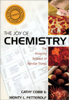

The Joy of Chemistry
This book challenges the perception of chemistry as too difficult to bother with and too clinical to be any fun. Cathy Cobb and Monty L. Fetterolf, both professional chemists and experienced educators, introduce readers to the magic, elegance, and...